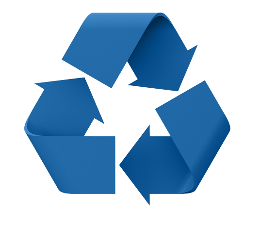

Passive Ways To Help
A great way to help sea waste passivly is the reduce, reuse, recycle modle. Doing this you can massivly lower your carbon footprint, save money, and have an impact of the sea waste catastrophe that is currently happening. This can be done threw simple things such as buying your own none plastic shopping bags, using reuseable metal straws instead of plastic straws, having your own water bottle, reusing takeaway containers instead of throwing them away, buying reusable coffee cups. Instead of throw old clothes away, donate them to charities, selling old technology online instead of putting it in land fill. Hiring professionals to properly breakdown technologies that no longer work. click the link below on how to recyle your technology properly
Currys recyling

Active Ways To Help
There are always laods of actives ways to help all the time, this is most commonly done through beach cleanups, river cleansings, park rubbish days. All of which are a great way to go outside, help your community and meet people who are alike to you. One of the biigest projects happening in the UK right now is the Million Mile Clean, consisting of 138,425 volunteers, removing 387,563 kilos of plastic pollution from the environment and cleaning up 1,101,015 miles so far, and there is more too do THIS YEAR, so help clean a beache, river, street or mountain near you by clicking the link below! And if this charity isn't participating in you area of the world, we highly advise you to make a quick google search and start helping today, 1 piece at a time!
Beach Clean